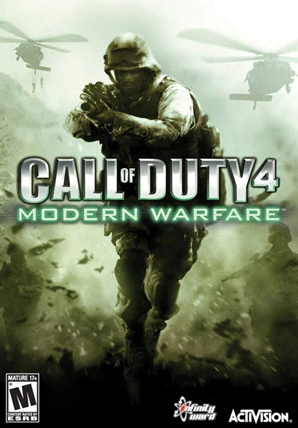
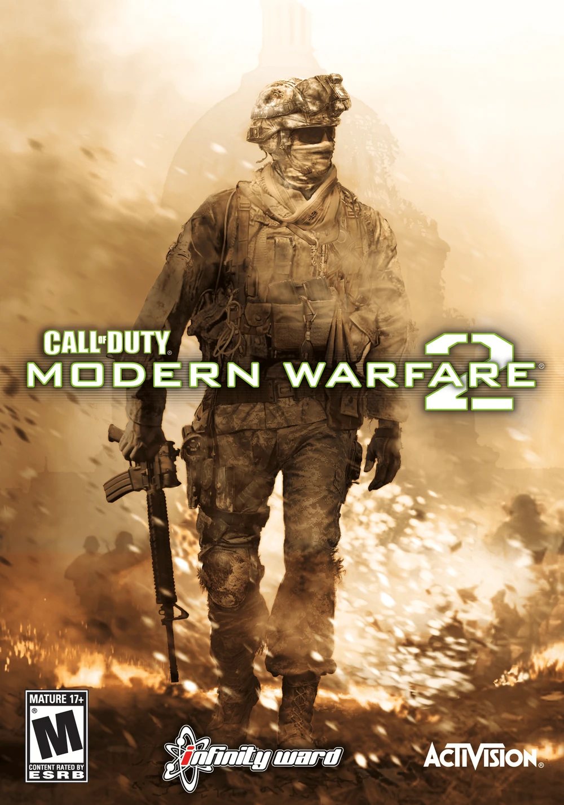
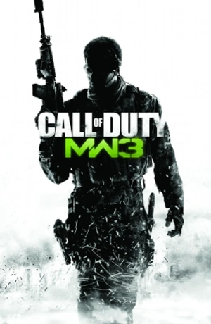

COD-4:MODERN WARFARE
Call of Duty 4: Modern Warfare is a first-person shooter video game and the first Call of Duty installment to break away from its World War II setting, and set in the modern world. It was announced on April 12, 2007 and was released on November 5, 2007. Call of Duty 4 was published by Activision and developed by Infinity Ward, and is available on Windows, OS X, Xbox 360, and the PlayStation 3.
Plot Overview
The game’s story takes place in 2011, where a radical leader has assassinated the president of an unnamed Middle Eastern country, sparking a civil war in Russia. Players experience the conflicts through the perspectives of a U.S. Marine Force Recon sergeant and a British SAS commando, with missions set in various locations such as the United Kingdom, the Middle East, and Russia.
Trailer-
For More Information-
Call Of Duty-4:Modern WarfareCOD:MODERN WARFARE Ⅱ
Call of Duty: Modern Warfare 2 is the sixth main Call of Duty game, and the fourth developed by Infinity Ward. The game was published by Activision for the PC, PlayStation 3, and Xbox 360. Officially announced on February 11, 2009, the game was released worldwide on November 10, 2009. It is the direct sequel to Call of Duty 4: Modern Warfare, continuing along the same storyline and gameplay.
Call of Duty: Modern Warfare 2 has received highly positive reviews from various gaming websites, attaining a 94% aggregate score on Metacritic, with praise stemming primarily from its in-depth multiplayer component.
Plot Overview
The game takes place five years after the events of Call of Duty 4: Modern Warfare. The story follows Task Force 141, a multinational special operations unit led by Captain Soap MacTavish, as they attempt to track down Vladimir Makarov, a former associate of Imran Zakhaev who has become a brutal leader of the Russian Ultranationalist party.
The campaign begins with a series of terrorist attacks in Europe and the Middle East, which are attributed to Makarov. The Task Force 141 team, along with the US Army Rangers, is deployed to various locations around the world to stop Makarov’s operations
Trailer-
For More Information-
COD:Modern Warfare 2COD:MODERN WARFARE Ⅲ
Call of Duty: Modern Warfare 3 is the eighth main Call of Duty game, and the fifth developed by Infinity Ward. It's the sequel to Call of Duty: Modern Warfare 2 and is the third and final installment in the original Modern Warfare series.
Activision confirmed the title was in pre-production on April 9, 2010[1] and was released on November 8, 2011.[2] Sledgehammer Games, originally planning to work on the canceled action-adventure Call of Duty, worked with Infinity Ward to complete all aspects of Call of Duty: Modern Warfare 3. Raven Software assisted with the user interface and downloadable content, as they had with previous Call of Duty games. Treyarch also assisted with the multiplayer, designing the weapon artworks, and developing the survival mode. Treyarch also developed the Wii version of Modern Warfare 3. Neversoft assisted Infinity Ward with the campaign and worked on the Special Ops Chaos mode.
Plot Overview
The game concludes the original Modern Warfare trilogy, set after the events of Modern Warfare 2. The Russian Federation, led by Vladimir Makarov, declares war on the United States and invades Europe. Task Force 141, led by Captain John Price and Captain “Soap” MacTavish, must track down Makarov and prevent a global catastrophe.